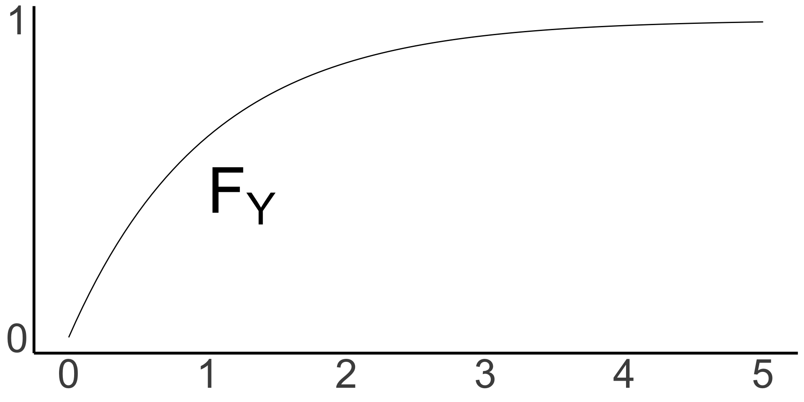
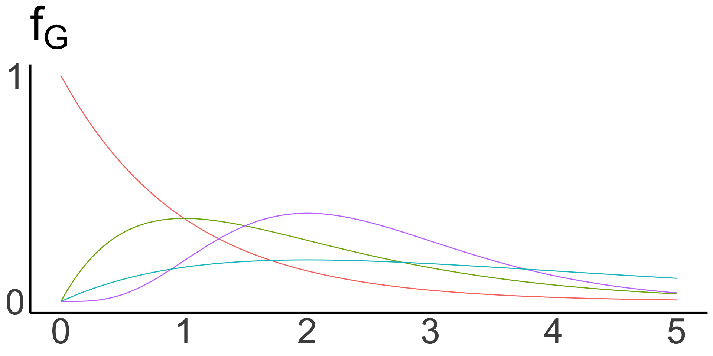
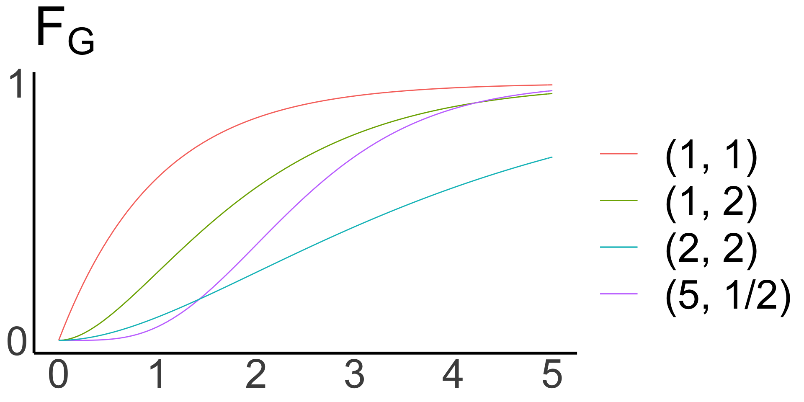

Lecture 4: Continuous Random Variables
STA237: Probability, Statistics, and Data Analysis I
Michael Jongho Moon
PhD Student, DoSS, University of Toronto
May 18, 2022
Example: Broken Watch
Suppose you find a broken watch
with only the hour hand its place.
What is the probability that
the watch stopped at exactly
9:00 am?
Assume an equal probability
for any position of the hour hand.
Let \(H\) be the random variable that represent
the position of the hour hand.
We want to compute
\[P\left(H=9\right).\]

\[P\left(H=9\right)\]
There are 12 values
an hour hand can take.
Is it then \(P\left(H=9\right)=\frac{1}{12}?\)
What if the hour hand was off the 9-hour mark by a small bit?
There are infinite positions the hour can take resulting in \(P(H = 9)=0\).
Instead, what we just computed was about the interval between 9 and 10 o’clock.
\[P(9\le H <10)=\frac{1}{12}\]
- \(H\) is an example of a continuous random variable
- A continuous variable can take an infinite number of values that are not countable
Other examples
- The height of a person. There is no next value after 176.33 cm
- Waiting time for the next box. We can’t count time in general
- Continuous variables are also used to model values that can only be discrete in practice such as a person’s annual income in CAD
Defining continuous random variables
Continuous random variable
A random variable \(X\) is continuous if for some function \[f:\mathbb{R}\to\mathbb{R}\]
and for any numbers \(a\) and \(b\) with \(a\le b\),
\[P\left(a\le X\le b\right)=\int_a^b f(x) dx.\] The function \(f\) has to satisfy
(i) \(f(x)\ge 0\) for all \(x\), and
(ii) \(\int_{-\infty}^\infty f(x) dx = 1\).
We call \(f\) the probability density function of \(X\) and the value \(f(x)\) is the probability density of \(X\) at \(x\).
Similar to a probability mass functioin, a probability density function uniquely defines (the behaviour of) a continuous random variable.
\[P\left(a\le X\le b\right)=\int_a^b f(x) dx\]
Note that
- \(f(x)\) is NOT a probability
- Both a pmf and a pdf uniquely defines a random variable, but a pmf maps to \([0,1]\) and a pdf to \(\mathbb{R}\)
- \(f(x)\) can be interpreted as a relative measure of likelihood around \(x\)
Cumulative density function
The cumulative distribution function \(F\) of a random variable \(X\) is the function
\[F:\mathbb{R}\to [0,1],\]
defined by
\[F(a)=P(X\le a)\quad\quad\text{for }-\infty<a<\infty.\]
The definition of a cdf is the same for discrete and continuous random variables.
Properties of continuous distribution functions
- For a continuous random variable \(X\) with pdf \(f\), we have
\[F(a)=P(X\le a)=\int_{-\infty}^a f(x) dx\]
- A cdf uniquely defines a distribution for both discrete and continuous
- We can alternatively define a continuous random variable based on \(F\)
A random variable is called continuous if its cumulative distribution function \(F\) is continuous everywhere.
Example: Broken Watch
We assumed there is an equal likelihood of \(H\) being between 0 and 12.
Its probability density function will be a constant, say \(k\), over the interval from 0 to 12.
The cumulative distribution function will start to increase from 0 at \(H=0\) at a constant rate to reach 1 at \(H=12\).

Note that \(F\) is continuous on \(\mathbb{R}\).
Example: Dekking et al. Quick Exercise 5.1
Suppose a random variable \(X\) is defined by the following probability density function.
\[f(x)=\begin{cases}\frac{1}{2\sqrt{x}} & \text{when }0<x<a \\0 &\text{otherwise}\end{cases}\]
What is \(a\)?
Quantile, percentile, and median
Let \(X\) be a continuous random variable and \(p\) a number between 0 and 1. The \(p\)th quantile or \(100\cdot p\)th percentile of the distribution \(X\) is the smallest number \(q_p\) such that
\[F(q_p)=P(X\le q_p)=p.\]
The median of a distribution is its \(50\)th percentile.
Example: \(q_{0.7}\)
The definition for a continuous variable isn’t sufficient for a discrete random variable. A more comprehensive definition is provided on the right.
Let \(X\) be a random varible with cumulative distribution function \(F\). Then the quantile function of \(X\) is the function \(F^{-1}\) defined by
\[F^{-1}(t) = \min \left\{x: F(x) \ge t \right\},\]
for \(0<t<1\).
That is, we want the smallest value
the random variable can take such that
the cdf of the value is
greater than or equal to \(t\).
Common continuous distributions
Uniform distribution
A continuous random variable has a uniform distribution on interval \([\alpha, \beta]\) if its probability density function \(f\) is given by
\[f(x)=\begin{cases}\frac{1}{\beta-\alpha} & \text{where }\alpha \le x\le \beta; \text{ and}\\ 0 &\text{otherwise.}\end{cases}\]
We denote this distribution by \(U(\alpha,\beta)\).
- Used for assigning equal probabilities across a fixed interval
- Often represents completely arbitrary experiments, or complete ignorance about the likelihood of outcomes
- \(H\) from the broken watch example is uniformly distributed between 0 and 12, \(H\sim U(0,12)\)
- We assumed we have no knowledge of when the watch stopped working before picking it up
Uniform distribution
Note that the properties of a cumulative distribution function all hold:
- non-decreasing,
- right-continuous, and
- 0 on the left end to 1 on the right end
Example: Air duct cleaning scam calls
Suppose Michael receives
\(r\) air duct cleaning
scam calls every year.
Let the random variable
\(T\) be the amount of time
between two consecutive calls.
To compute the distribution of \(T\)…
- divide 1 year into \(n\) equal-length intervals
- make the intervals small enough that Michael may receive only 1 call per \(1/n\)-year interval
- assume whether Michael receives a call during a particular \(1/n\)-year interval is identical and independent from each other
Then, \(p=r/n\) represents the probability of
getting a scam call in any \(1/n\)-year interval.
\[P(T>1\text{ year})=P(T>n\text{ intervals of length }1/n)\]
\[=\left(1-p\right)^n=\left(1-\frac{r}{n}\right)^n\] is the probability that Michael doesn’t receive a call for
1 year or \(n\) successive intervals that are \(1/n\)-year long.
Letting \(n\to\infty\),
\[P(T>n) = \lim_{n\to\infty}\left(1 - r\cdot\frac{1}{n}\right)^n=e^{-r}\]
To compute \(P(T> tn)\), or the probability that Michael doesn’t receive a call for \(t\) years - \(t\times n\) of (\(1/n\)-year intervals), we need
\[P(T>t\text{ years})=e^{-rt}.\]
Thus, we have \(F_T(t)=1-e^{-rt}\) and taking its derivative gives its pdf.
\[f_T(x) = \frac{d}{dx} \left(1-e^{-rx}\right) = re^{-rx}\]
Exponential distribution
A continuous random variable has an exponential distribution with parameter \(\lambda\), \(\lambda>0\), if its probability density function \(f\) is given by
\[f(x) = \lambda e^{-\lambda x}\quad\quad \text{for }x\ge0.\]
We denote this distribution by \(\text{Exp}(\lambda)\).
- Often used to represent time until the next event in a Poisson process
- \(T\sim\text{Exp}(r)\) in the previous example
Exponential distribution
\[ Y \sim \text{Exp}(1) \]

Example: Customer
(Adopted from Devore & Berk)
Let \(X\) be the time (hr) between two successive arrivals at the drive-up window of a local bank. Suppose \(X\) has an exponential distribution with \(\lambda=\lambda_0\).
What is the probability that no customer showing up for first 2 hours after opening?
Suppose 2 hours have passed since opening without a customer. What is the probability that no customer shows up for the next 2 hours?
Suppose 2 hours have passed since opening without a customer. What is the probability that no customer shows up for the next 2 hours?
\[P(X>4 | X>2)=\frac{P(\{X>4\}\cap\{X>2\})}{P(X>2)}\]
\[=\frac{P(X>4)}{P(X>2)}\]
because \(\{X>4\}\) implies \(\{X>2\}\).
\[P(X>4)=1-\int_{-\infty}^4 f(x) dx\] \[=1-\left[\int_{-\infty}^0f(x)dx + \int_0^4f(x)dx\right]\]
But \(f(x)=0\) when \(x < 0\).
\[P(X>4)=1-\int_0^4\lambda_0e^{-\lambda_0 x}dx\] \[=\left.-e^{-\lambda_0 x}\right|_0^4\]
\[=1-\left[(-e^{-4\lambda_0}) - (-e^0)\right]=1-1+e^{-4\lambda_0}=e^{-4\lambda_0}\]
Similarly,
\[P(X>2)=e^{-2\lambda_0}\]
(Alternatively, we could compute \(P(X>a)=\int_a^\infty f(x)dx\).)
\[P(X>4|X>2)=\frac{e^{-4\lambda_0}}{e^{-2\lambda_0}}=e^{-2\lambda_0}=P(X>2)\]
This tells us that whether there was a customer in the past 2 hours does not change the probability of a customer’s arrival in the next 2 hours.
Memoryless property
For any \(s,t>0\),
\[\begin{align} & P(X>s + t | X>s) \\ = & \frac{P(X>s + t)}{P(X>s)} \\ = & \frac{1-\left(1-e^{-\lambda(s+t)}\right)}{1-\left(1-e^{\lambda s}\right)} \\ =&\frac{e^{-\lambda s}e^{-\lambda t}}{e^{-\lambda s}} \\ = & P(X>t)\end{align}\]
The timing
of a past event
does not change
the probability of
the timing
for the next event.
Gamma distribution
A continuous random variable has a gamma distribution with parameter \(\alpha\) and \(\beta\), \(\alpha>0\) and \(\beta>0\), if its probability density function \(f\) is given by
\[f(x)=\frac{1}{\Gamma(\alpha)}\beta^\alpha x^{\alpha-1}e^{-\lambda x}\quad\text{for }x>0.\]
We denote this distribution by \(\text{Gamma}(\alpha, \beta)\).
- \(\Gamma(\cdot)\) is called the gamma function
- \(\Gamma(n)=(n-1)!\) when \(n\) is a positive integer
Gamma distribution
\[ G_{\alpha,\beta} \sim \text{Gamma}(\alpha, \beta) \]


- Used to represent the size of insurance claims, rainfalls, etc.
- With two parameters, it is more verstile than an exponential distribution
Normal distribution
A continuous random variable has a normal distribution with parameter \(\mu\) and \(\sigma^2\), \(\sigma^2>0\), if its probability density function \(f\) is given by
\[f(x)=\frac{1}{\sigma\sqrt{2\pi}}\exp\left\{-\frac{1}{2}\left(\frac{x-\mu}{\sigma}\right)^2\right\}.\]
We denote the distribution by \(N(\mu,\sigma^2)\).
- Often used to model observational errors
- Central in probability theory and statistics
Normal distribution
\[X_{\mu,\sigma} \sim N(\mu, \sigma^2)\]
- \(\mu\) is the center of the distribution
- \(\sigma^2\) represents the spared of the distribution
- Normal distributions are symmetric
Standard normal distribution
A normal distribution with \(\mu=0\) and \(\sigma^2=1\) is called the standard normal distribution. We often denote a standard normal random variable by \(Z\), \(Z\sim N(0,1)\), its pdf with \(\phi\), and its cdf with \(\Phi\).
\[\phi(z) = \frac{1}{\sqrt{2\pi}}e^{-\frac{1}{2}z^2}\]
\[\Phi(a) = \int_{-\infty}^a\frac{1}{\sqrt{2\pi}} e^{-\frac{1}{2}z^2}dz\]
We can transform
any normal random
variable \(X\sim N(\mu, \sigma^2)\)
to \(Z\) by
\[Z=\frac{X-\mu}{\sigma}.\]
- There is no explicit solution for \(F(a)=\int_{-\infty}^af(x)dx\) of a normal random variable
- To compute probabilities for any normal random variable, we can…
- transform the variable to \(Z\) and compute the probabilities by using a look-up table for \(\Phi\)
- use R or any software that provides \(\Phi\) computation
Example: Computing probabilities of a normal random variable
Suppose \(X\sim N(1, 4^2)\). Find
- \(P(X > 2)\)
- \(P(X\le -0.5)\)
- \(q_{0.25}\)

Practice questions
- Exercises from Dekking et al. Chapter 5: All
- Read Dekking et al. Section 5.4 and solve Quick Exercise 5.7
- Exercises 74 a), c), and 75 a) from Devore & Berk
Simulation in R worksheet
- Follow this link to open the worksheet
© 2022. Michael J. Moon. University of Toronto.
Sharing, posting, selling, or using this material outside of your personal use in this course is NOT permitted under any circumstances.